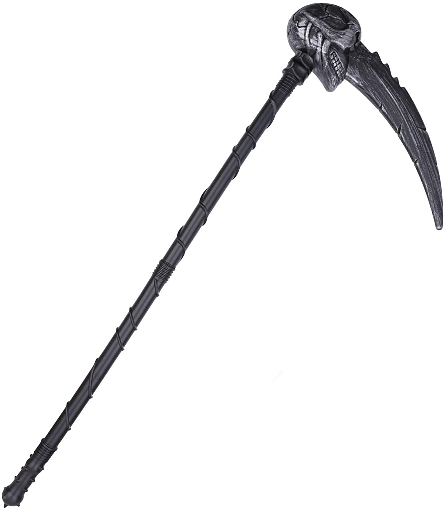

The Red Lake Case
This is Julie
She was a 13 year old who enjoyed playing video games and also liked the oudoors, she had long black hair and bright blue eyes. She was loved by many and she was a very fun person to be around, but she was unfortunately killed in an accident that took place at the red lake on December 11 2018.
This is Aaron
Aaron was a 15 year old who enjoyed going places and he also found the outdoors a wonderous place, he had short messy black hair and emerald green eyes. People say he was a joy to be around, but then the accident that killed Julie took his life as well.
Witness
There was only one witness of this tragic event, their father. He reports this accident the day after it took place on tuesday the 11th. He reports that his children went out to play early that morning. He remebers them coming back home to grab something but then they left again, he noticed them leaving the second time but when he realized what day it was, it was already to late. He says that he ran to the lake as soon as possile but when he got there they were already being pulled under.
History of the Red Lake
Red Lake was a lake that is avoided by the locals due to it's past. Red Lake is red itself for unknown reasons, all that is known about this lake is back in 1984 when the serial killer Mark Richel jumped into the lake while escaping the cops, but he never came back up. Soon after he had jumped in the lake became red. Mark was never seen again but people still avoid the lake to this day. The locals believe the Mark Richel is the one who dragged the siblings under; but that is still unknown.
About Mark Richel
Mark Richel was a serial killer who went after mostly adults. Yet there were cases when children were the victims. He had about 36 known victims, and 6 of them were children under the age of 17. Doctors found serveral wounds on every victim that apeared to be left my a sythe. Police searched his home after the jumped into the lake and found a sythe that looked like the picture below.
